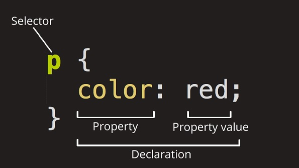

CSS: Cascading Style Sheets
Cascading Style Sheets (CSS) is a stylesheet language used to describe the presentation of a document written in HTML or XML. CSS describes how elements should be rendered on screen, on paper, in speech, or on other media.
Anatomy of a CSS ruleset
The whole structure is called a ruleset. Let's dissect the CSS code for red paragraph text to understand how it works :

Different types of selectors
| Selector name | What does it select | Example |
|---|---|---|
| Element selector | All HTML elements of the specified type. | p selects <p> |
| ID selector | The element on the page with the specified ID. On a given HTML page, each id value should be unique. | #my-id selects <p id="my-id"> or <a id="my-id"> |
| Class selector | The element(s) on the page with the specified class. Multiple instances of the same class can appear on a page. | .my-class selects <p class="my-class"> and <a class="my-class"> |
| Attribute selector | The element(s) on the page with the specified attribute. | img[src] selects <img src="myimage.png"> but not <img> |
| Pseudo-class selector | The specified element(s), but only when in the specified state. (For example, when a cursor hovers over a link.) | a:hover selects <a>, but only when the mouse pointer is hovering over the link. |